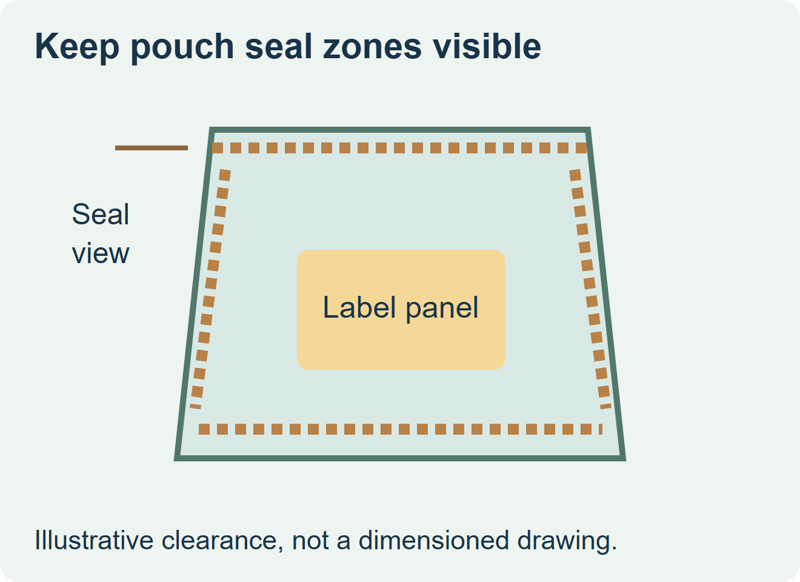
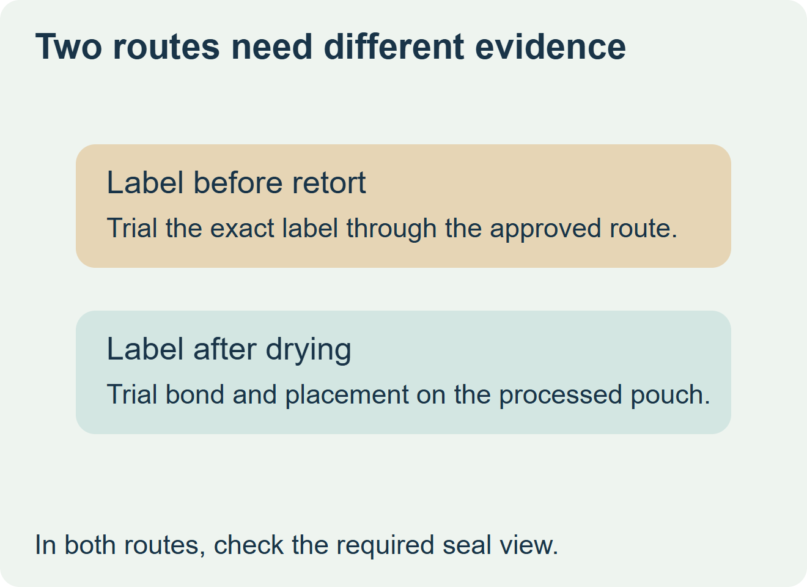

Ask the processor to mark the seal inspection zones on a filled pouch before releasing artwork. If the label will go through retort, qualify the exact printed construction on the intended pouch through the processor’s approved route. If the label can be applied after processing and drying, qualify adhesion on that actual dry or residual-moisture surface, along with the finished pack’s handling.


Reserve access for seal inspection
Request the pouch drawing and a filled, sealed specimen. Mark the seal areas, tear feature and the view needed by the inspection station. Ask which areas must remain visible at each check. Place the label inside the remaining panel and account for the approved placement variation. A drawing of an empty pouch can show the nominal area, while the filled specimen shows the actual panel contour.
The Canadian Food Inspection Agency’s defect manual covers seal and body integrity, drying and post-process handling. It gives the processor context for specifying clearance and checks. Piroto describes a separate supplier example of a specialist label applied to a flat pouch before filling and retorted with the pack. Those sources support asking about distinct routes. They do not establish that any proposed label construction or ZFU supply can pass retort. CFIA pouch defect manual and Piroto’s example of a pre-retort label trial
| Application route | Evidence to request | What to inspect on the actual pouch |
|---|---|---|
| Before the validated process | Exact face, printing, coating and adhesive on the actual pouch through the approved line | Label position, edge lift, ink legibility and access to the required seal view after the route. |
| After processing and approved drying | Application at the actual station on representative processed pouches | Surface moisture, filled panel fit, label bond after handling and the required inspection view. |
| Location or compatibility unresolved | A permitted sample run or a different approved packaging route | Hold the order until the processor and converter agree the applicable route and specimen. |


Ask for one complete trial record
Record the pouch revision and supplier, exact label construction, proposed print coverage, label stage and the finished-pack inspection outcome. Have the processor own all process and pouch integrity decisions. If the prototype differs in film or adhesive, keep that limitation with the sample. A cosmetic approval does not release the underlying pouch or its processing conditions.
Discuss the unresolved label requirement
Send the pouch laminate or exterior specification, filled pouch drawing with the seal inspection zones, the approved process stage for labeling, surface condition there, label artwork, and quantity by SKU. Identify the processor responsible for package and process approval. Review food label options and prepare a label specification inquiry. The contact page opens an email draft and lists email or WhatsApp for attachments. Supply, proof options, testing, pricing and timing require project confirmation.